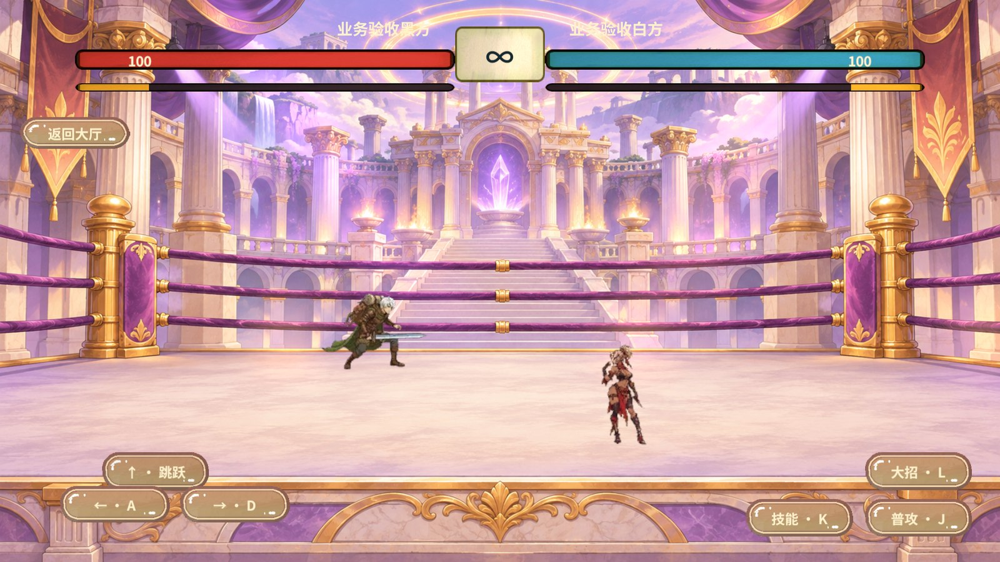
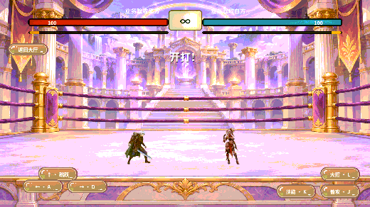

双人决斗预测回滚验收
联机玩家的移动和跳跃可先在本地落屏。客户端将已确认完整帧恢复到独立原生实例，重演尚未确认的意图。对手、血量、招式特效和胜负继续读取权威播放流。
从输入到回滚
PvpDuelView读取键盘和触点。PvpService分别记录未发送按键、已发送输入序号和已消费权威帧号。入队成功只代表消息已上行。- 服务器 Gate 或 UTP 黑方宿主按 50 毫秒步长封帧。回执附在追到最新上界的帧批次上，带有本席已处理的序号，以及仍在等待恢复期的招式序号与到期帧。
- 客户端先执行连续完整帧，然后用回执移除已处理的方向与跳跃。仍处于恢复期的招式按权威到期帧保留，旧回执不能清掉新的输入，也不能唤醒已暂停的预测。
DuelPrediction从同号原生检查点恢复沙盒。检查点包含垂直速度与随机状态，按未确认输入的序号重演最多四帧。远端只用最近确认的方向作短时猜测。- 本机显示只取预测的横坐标、离地高度和跑动方向。同帧位置出现差异时，场景将小幅偏移在 85 毫秒内衰减。掉线、长追帧、日志超限或锚点过期时回到权威插值。
王者 v122 的 BattlePredictSystem.OnSendMove 把带序号的本机意图交给独立预测通道，RefreshDisplayPredictData 消费预测输出，UpdateActive 在追帧或网络不稳时关闭预测。CmdQueueSender 则以下行回显确认技能序号。RevGame 的完整检查点、四帧上限和回执格式是按现有内核设计的。
代码阅读顺序
| 链路 | 源码入口与注释内容 |
|---|---|
| 上行和权威封帧 | PvpService.Duel.cs、DuelFrames.cs、GoDuelHandler.cs。输入邮箱、帧批次、回执、断线与同帧指纹各自独立。 |
| 传输与兼容 | GoRelay.proto 与两端重新生成的协议、FantasyGoTransport.cs 及 LAN 信封。字段说明保留在协议源中。 |
| 预测和原生状态 | DuelPrediction.cs、DuelCorePipe.cs、RevGameCore。解释输入重演、检查点字节、隐藏状态、固定点、随机与 FIFO 背压。 |
| 落屏和回放 | DuelPlayback.cs、DuelReplay.cs、PvpDuelView.cs 与角色动画、特效类。解释时间域、座位、序列、纠偏和权威事件去重。 |
Revolution 的 RevServices、RevLogic、RevScene 和表现状态机继续持有场景和生命周期。帧流、预测、回滚及确定性边界由项目业务实现，自动化通过 RevRuntimeAutomation 驱动真实入口。
运行证据
| 环境 | 断言 |
|---|---|
| C# 与真实原生 DLL | dotnet run --project tools/DuelPredictionChecks/DuelPredictionChecks.csproj。覆盖延迟跳跃、同帧分歧、恢复垂直速度、重复回执、等待招式过期、补帧窗口、断线重连、日志溢出。 |
| C++ 源码重新编译 | Windows MSVC C++17 PipeChecks 通过 FIFO、缺帧、背压、完整检查点和独立实例确定性测试。 |
| 真实 KCP 双端 | 在 Windows 回环环境验证两席各收自己的封帧回执。黑方跳跃只执行一次，双方在第 119 帧对上终局指纹 2027019683，共同确认 3 个样本后退出。 |
| 真实 UTP 双端 | 最终版黑白两席均观察到预测位移，已确认帧号和指纹保持原值。注入白方错误样本后，两端同报第 40 帧分歧并停局。正常终局用例在本次迭代前一轮对账至第 116 帧，最终版复测在决斗开始前的局域网邀请阶段超时。 |
| Unity 正式决斗画面 | 经 EventSystem 点击真实跳跃按钮。黑方在权威高度仍为 0 时已经画出离地，后续观察到权威跳跃和实际 Sprite 换帧。两席血量均为 100，结束后退出房间并返回大厅。 |
通过同一个显式连接 RevGame.Unity 的 RevMCP stdio 会话先执行 rev_discover，用 rev_call 调用 editor.refresh、editor.compilation 和 editor.play。进入 Play 后重新发现 pvp.duel，通过 rev_run 驱动 pvp.duel-prediction-view-check、pvp.duel-prediction-jump 和双端用例。计划执行 pvp.test-cleanup、pvp.return 并核对已回到大厅，最后停止 Play。


联机版本与覆盖范围
联机新增封帧回执，需配套更新客户端和服务器。原生配置、检查点和已封口回放格式保持兼容。测试覆盖 Windows 同机与 Unity 2022.3.15f1c1 Editor，尚未测量跨设备、公网弱网或移动端手感。本机未找到现有 Mono 测试包用于增量替换。